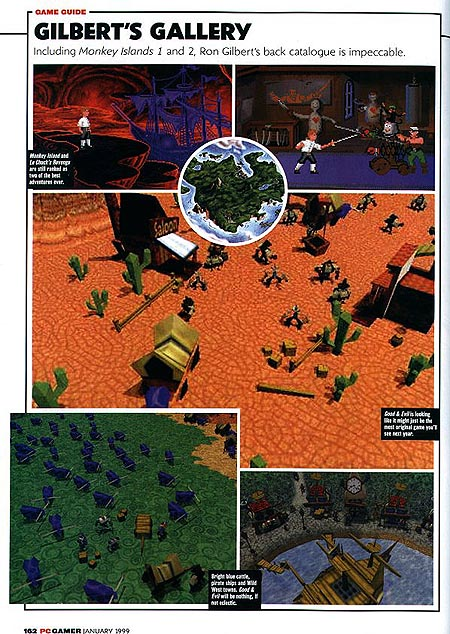

|
|
|
Com os games Maniac Mansion e Monkey Island 1 e 2, Ron Gilbert moldou os adventures dos anos 90. Saído da Lucas Arts para fundar a Cavedog, ele surpreendeu a todos ao lançar o jogo de estratégia Total Annihilation. Como um só homem pode dominar dois gêneros tão diversos? A equipe da PC Gamer conseguiu entrevistar Ron Gilbert em uma visita recente que o criador fez a Londres.

PCG - Com o lançamento de um novo filme da série "Guerra nas Estrelas" e com a atenção que a divisão de games Lucas Arts receberá como resultado, certamente nunca houve um momento melhor para ser um membro do Império Lucas. Porque você abandonou a empresa? Você lamenta tê-lo feito?
Ron Gilbert - Estive com a LucasArts por oito anos. Tive ótimos momentos lá, realizei muita coisa e gostava de trabalhar com todos, mas senti que era hora de mudar. Às vezes penso que seria bom ter ficado lá, embora nunca tenha lamentado a minha saída. É engraçado, porque eu ainda falo com muita gente de lá e há dois lados muito diferentes dessa história. Há pessoas que dizem que é maravilhoso poder trabalhar com novos jogos da série "Guerra nas Estrelas", mas há quem diga "não acredito que teremos que fazer mais um game baseado em Star Wars". Estou louco para ver os filmes, mas não me incomodo por não estar participando disso.
Sua participação foi claramente crucial na criação e no sucesso das duas primeiras aventuras da série Monkey Island e, conseqüentemente, dos adventures da Lucas Arts em geral. E ainda assim você não foi nem consultado quando fizeram Monkey Island 3. Você gostaria de estar envolvido em sua criação, ou pelo menos do seu roteiro?
Conversei bastante com a equipe de desenvolvimento enquanto eles trabalhavam, mas o assunto nunca era o jogo em si. Mas os direitos de Monkey Island pertencem à Lucas Arts. O jogo é deles, não meu.
Você sentiu alguma pressão criando Monkey Island 2, depois do enorme sucesso do original?
Olho para meus antigos adventures e acho que há alguns quebra-cabeças que gostaria de não ter colocado, ou locais que não ficaram bons, mas não me lembro de muita pressão enquanto fazia Monkey Island 2. Nós apenas começamos a fazê-lo em um projeto ininterrupto. Um monte de coisas em Monkey 2 deveriam estar em Monkey 1. Não importava que estivéssemos ficando sem tempo para acabar Monkey 1, porque eu podia apenas engavetar o trabalho e aproveitá-lo na seqüência. Mas se eu tivesse que fazer um Monkey Island 4, certamente sentiria a pressão.
A tendência atual são criadores que abandonam um publisher ou uma equipe e se estabelecem sozinhos. Claramente, foi o que você fez. Isso beneficia a indústria?
Não acho que, em geral, isso seja saudável. É bom que algumas pessoas possam sair fazer coisas por elas mesmas, mas parece que recentemente as pessoas fazem um jogo e então se mandam, o que significa que elas nem sempre têm toda a experiência de que precisam. Se você é programador em um projeto e pensa que pode se virar sozinho, ser o designer e o programador e dirigir a companhia, é provável que haja ambição demais. São ondas. Não é uma situação nova. Vi isso acontecer antes: equipes racham e vai cada um para seu lado. Então acabam indo à falência e voltando a ser empregados. Mas parece que hoje as pessoas largam os empregos muito rápido, em vez de esperar três, quatro ou cinco anos.
É exatamente o que aconteceu com Chris Taylor, o produtor de Total Annihilation que deixou a Cavedog. Você ainda fala com ele?
Não falo muito com ele, embora várias pessoas da equipe de Total Annihilation ainda o façam.
Você sente alguma falta da capacidade criativa dele?
É uma questão difícil Clayton (Kauzlaric, co-designer de Total Annihilation e produtor de Total Annihilation 2) e Chris trabalharam lado a lado em Total Annihilation. Quando Clayton começou a fazer Kingdoms nós demos a todos da equipe um papel no desenvolvimento.
É por isso que Kingdoms está saindo tão diferente de Total Annihilation? Simplesmente porque você não tem mais a influência de Taylor?
Sim. É bom porque nos permite a chance de dar à idéia uma nova direção. Definitivamente, há alguns elementos em Kingdoms que duvido serem aprovados por Chris.
O que sentiu quando Chris disse que estava deixando vocês? Houve algum desapontamento ou frustração de sua parte ou foi possível ver um pouco de você mesmo na vontade que ele teve de seguir um outra direção?
Não fiquei chateado com Chris. Não seria certo, pois foi o mesmo que fiz com a Lucas Arts. A única diferença é que fiquei na Lucas Arts por oito anos.
O custo de produção de um game - o tempo que consome e o tamanho da equipe - o surpreendeu depois de ter começado sua própria empresa?
Na verdade não, pois já havia visto isso vários anos atrás na Lucas Arts. O que me surpreende é como eles ficaram mais caros com o passar do tempo. A cada ano os games custam centenas de milhares de dólares a mais para serem criados, o que significa que você precisa vender mais cópias. Minha preocupação é com a demanda por parte do consumidor de gráficos excelentes e centenas de horas de jogo. Isso significa que se a companhia não consegue vender um número de cópias que suporte isso, vai cair em uma situação muito delicada. Espero que o número de pessoas que compram games também aumente na mesma proporção do dinheiro extra que gastamos. Então tudo estará bem.
Apesar de um histórico como criador de adventures, seu primeiro jogo pela Cavedog foi de estratégia em tempo real. Qual dos dois você prefere?
Humm... Acho que prefiro criar adventures, mas tenho tendência a jogar games de estratégia em tempo real.
Muitas pessoas de fora da Cavedog devem ter se surpreendido com o sucesso desenfreado de Total Annihilation. De dentro da Cavedog, você previu o sucesso do jogo?
Não há como negar que sabíamos ter um bom jogo. Levamos dois anos e meio para fazê-lo ainda nos divertíamos jogando. E o retorno em previews tinha sido muito positivo. Mas nem sonhávamos que ele seria tão bem recebido.
Quanto de design você faz atualmente?
Em Good & Evil eu estou fazendo tudo. Em Kingdoms não faço muito. Confio na competência da minha equipe, embora eu e Clayton nos encontremos ao menos uma vez por dia para colocar os assuntos em dia.

Então você não se deixa apanhar por infindáveis reuniões de planejamento?
Não. Eu não faço reuniões. Odeio reuniões. Gosto de dar autonomia aos designers. Não gosto de interferir. Gosto de desafiar suas suposições, em vez de dizer a eles o que fazer. Se eles ainda preferem seguir com suas idéias depois de eu tê-las questionado, então eles assumem a responsabilidade.
Você já pensou em criar jogos para consoles?
Nós não temos nenhum domínio sobre consoles na Cavedog. Mais, você está realmente à mercê da Sony ou da Nintendo quando cria jogos para videogames. Não acho que softwares para consoles sejam algo que teríamos prazer em fazer.
E a suposta simplicidade em desenvolver jogos ao mesmo tempo para o Dreamcast e para o PC, não ajuda?
Não acho que o Dreamcast tenha memória RAM suficiente para agüentar um jogo de PC. Ano que vem teremos jogos baseados em 64 MB de RAM e o Dreamcast simplesmente não conta com tudo isso. Mas definitivamente é uma plataforma que estamos acompanhando. Pode se mostrar o caminho mais fácil no desenvolvimento para consoles.
Você se concentra em criar personagens e mundo verossímeis em seus jogos e tem freqüentemente ligado design de jogos à criação de filmes e livros. Você já pensou em colocar suas próprias opiniões nos jogos, usando-os para marcar posição?
Claro. Acho que as pessoas que dizem que não, também o fazem. Elas apenas não percebem que estão fazendo isso. Contar histórias, seja em livro ou em um filme ou em um jogo, é um processo que cria analogias com a gente ou com as pessoas que conhecemos. Colocando na mistura esse tipo de coisa, o universo do game fica mais rico, pois nos dá algo com que possamos nos identificar. As pessoas criticam quando você tenta empurrar a mensagem goela abaixo. Mas se isso for feito de maneira sutil, pode ser um método muito poderoso.
Seguindo esse raciocínio, o título ?Good & Evil? sugere um aspecto moral no jogo?
Não sei se o chamaria de ?moral?, mas o jogo está dividido em missões, embora você não tenha que jogá-las em uma ordem pré-determinada. Em cada uma das missões a história está relacionada ao conflito "bem versus mal". Há os clássicos "caras bons indo atrás dos caras maus" e ainda há a histórias de duas religiões, uma achando que a outra é má. A história gira em torno da possibilidade de duas religiões serem boas ou más, enquanto o pano de fundo amarra todos os elementos.
Tiberian Sun e Kingdoms podem acabar sendo lançados em datas próximas. Command & Conquer ajuda ou atrapalha as vendas de Total Annihilation: Kingdoms?
Seria melhor se elas não saíssem ao mesmo tempo, mas não estou preocupado demais com isso. São na realidade dois gêneros diferentes: fantasia e guerra. Eles têm públicos diferentes, embora deva haver uma intersecção entre eles. Há pessoas que não gostaram de Warcraft, mas adoraram Command & Conquer. Embora seja um desafio concorrer com um nome tão forte, acho que temos nosso próprio público. A maior vantagem é que a Blizzard não fez outro Warcraft.
Como contador de histórias, você dá uma de George Lucas e vai escrevendo à medida em que as coisas caminham, ou é tudo planejado desde o início?
Bem, eu sei o que acontece no começo de Good & Evil, e sei como é o final. Agora só tenho que descobrir o que acontece no meio.
|
Ponto de vista: 3D ou não?
|
|
PCG - Gilbert revelou que a Cavedog tinha uma versão do engine de Total Annihilation que estava rodando totalmente em 3D. Então, porque não a usaram?
RG - Descobrimos que gostaríamos que a vista fosse do alto. Se você aproximar a câmera do solo, não vai querer jogar assim
|
|
Entrevista extraída da Revista CD EXPERT Ano 3 - Nro. 25, que traz a entrevista feita para a PC GAMER inglesa. Outras entrevistas de Ron Gilbert também podem ser encontradas em diversos sites (originais, em inglês):
1999 - PC Gamer (UK) - Versão original em inglês dessa mesma entrevista.
1998 - Finnish Pelit-lehti - Quando Ron Gilbert acabara de ir para a Cavedog e lançar Total Annihilation.
1992 - "Amiga Mania" Feature Story - Ron Gilbert acabava de fazer, na LucasArts, o tão bem-sucedido Monkey Island 2 - LeChuck's Revenge.
1990 - LucasFilm Adventurer Vol. 1, Nr. 1 - Lançamento de Monkey Island.
|
|